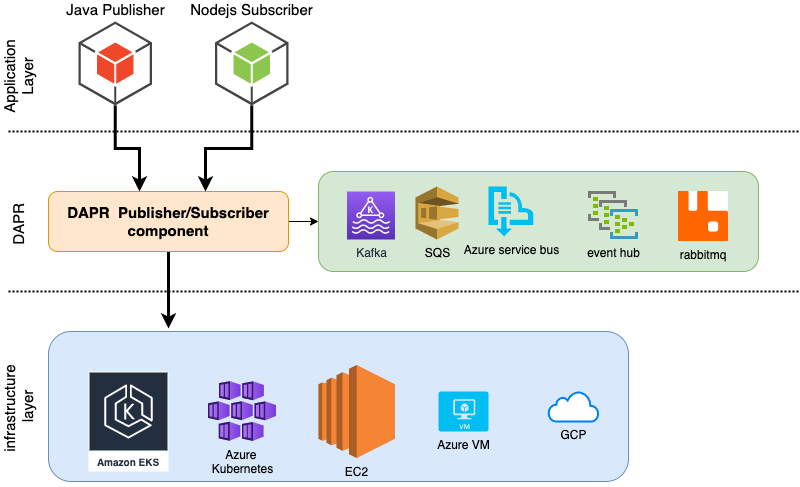

Publisher/Subscriber Model
Publish/subscribe messaging, or pub/sub messaging, is a form of asynchronous service-to-service communication used in serverless and microservices architectures. In a pub/sub model, any message published to a topic is immediately received by all of the subscribers to the topic. Pub/sub messaging can be used to enable event-driven architectures, or to decouple applications in order to increase performance, reliability and scalability.
Depending on which pub/sub technology you end up choosing, your application code will be tightly coupled the technology you choose, which makes it difficult to switch from one provider to another without changing the code of your application
DAPR ( Distributed APplication Runtime) give your the possibility to abstract your pub/sub layer and write your code independently of your pub/sub provider ( SQS, Azure Bus Service, Kafka, Azure event hub, rabbitmq, redis streams )

Example :
In this example we will have an order processing app where the publisher pushers orders to the messaging queue
Application Layer : Publisher and Subscriber both python programs
DAPR pubsub Component : we will use Azure Service Bus
1- creating Azure Service Bus :

for more details about how to create an Azure Service Bus, you can read this article
2- Install Dapr
curl -fsSL https://raw.githubusercontent.com/dapr/cli/master/install/install.sh | /bin/bash
3- initialize dapr
in a terminal window run : dapr init

4- configure dapr publisher component
create a yaml file called pubsub.yaml and place it under ~/.dapr/components
dapr run --app-id daprapptest --dapr-http-port 3601
6- Run publisher application
save the following app code to a publisher.py file
Starting the publisher app :
dapr run --app-id daprapptest --app-port 6001 --dapr-http-port 3601 --app-protocol grpc python3 publisher.py

The application start publishing messages to the Azure Service Bus
My Thoughts:
Modern microservices cloud-native applications need to be able to agnostic of the underlying technologies in order to achieve more independence and ease of deployment across platforms, in the example above we tied to make a publisher application code more independent of the technology, we used Azure Service Bus as a queue technology, but we could easily change it AWS SQS, Rabbit MQ , or any other platform that DAPR supports without having to make any changes to application code